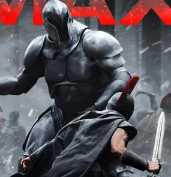

솔직히 내가 그랬음.
나도 놀란 감독의 오딧세이가 CG 안 쓰고 잘 만들었다고 생각함. 그런데 지루하다는 느낌은 지울 수가 없었음. 왜 그런가 생각해보니
현재 오디세이라는 작품을 재미있게 만드는 게 힘들다고 생각된다. 이유를 들다면
1. 원작이 2천년 전의 명작이라 내용 다 알고 있음. 심지어 아라비안 나이트에서도 비슷한 장면이 나오니.
2. 여러 가치 매체로 다 나온 걸 다 봄. 책- 그림책-만화책-영상화까지
그래서 다 이미 봤다는 느낌이 드는데 시간도 3시간 가까이 됨.
그나마 재미가 느껴지는 새로운 묘사가

이 포스터의 중잡갑 거인족 파트 정도. (이미지 출처: 나무위키)
그래서 이 영화는 잘 만든 동시에 지루했다는 평도 상당히 나올거라고 생각했다. 예전 영화채널에서 본 1954 율리시즈가 더 재미있게 느껴질 정도. 그런데 이상한 것은 지루하다는 평가글이 거의 안보인다는 점이다.
개인적 생각이지만 놀란 감독의 명성이 한국에서 너무 대단하고 TV홍보도 잘 되어서, 이 영화가 지루하다는 평을 쓰는데 압박감을 주는 게 아닌가 싶다.
글 잘못 썼다가 예술을 이해 못하는 사람이 될까봐.
개인적인 평가이고
다른 평가 있으면 님 평가도 맞음.
댓글
수집 당시 댓글 5개
일연속똥쌈 · 29 분 전
나도 아이맥스 아니었으면 졸았을 듯 ㅋㅋ
흐룍2 · 20 분 전
나도 기대이하였음. 산만한 전개, 하나의 작품으로 엮이지 못하고 나열식으로만 흘러가는 스토리, 단순한 전개의 반복, 매력없는 캐릭터들, 억지감동씬 하나를 위해 모든것을 어거지로 끌고가는 스토리, 기대 이하의 액션 (이건 뭐 놀란 감독의 다른 작품들도...) 등등 놀란 감독 명성이 아니었으면 이정도로 고평가받을 일이 없는 작품일듯
흰호랑김구 · 11 분 전
지루하진않고 재밌긴했는데 좀 고평가되었다는 것도 인정함 ㅋㅋ
장송의프리렌 · 8 분 전
나는 다크 나이트 3번 도전해서 3번 다 꿀잠 자고 나옴 ㅋㅋ 개인적으로 놀란 영화가 맞지를 않아서 인터스텔라도 몇번이나 도전해서 완주함 근데 반대로 오펜하이머랑 오디세이는 ㅈㄴ 재밌게 봄 ㅋㅋㅋㅋㅋㅋ 걍 다 개개인의 차가 있는거 같음 ㅎㅎ
꾸이와꾸스 · 6 분 전
사람들 테넷 ㅈ나 욕했는데. 그냥 재미있었음 아무도 놀란 영화 욕하는걸 두려워한다고 생각되지 않음. 그냥 진짜 소수 의견임.